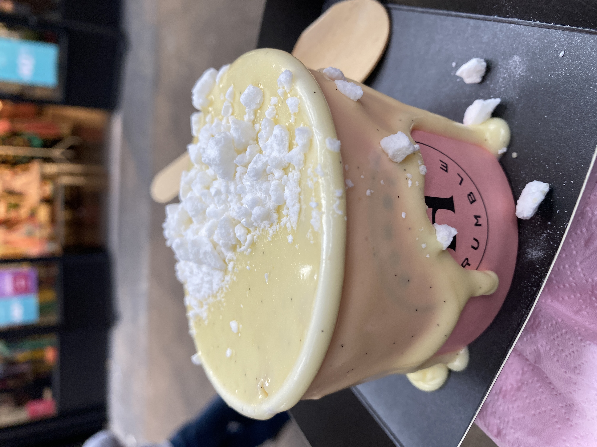

Steak & Grtiz

Indulging in the rich flavors at Le Relais de L'Entrecôte offers a culinary journey like no other. This renowned establishment, known for its mastery of classic French cuisine, presents a menu that artfully combines tradition with gourmet excellence. The highlight of the experience is undoubtedly the steak and grits – a dish that exemplifies the perfect blend of rustic charm and sophisticated taste. Each bite of the tender, perfectly cooked steak is complemented by the creamy, flavorful grits, creating a harmony of textures and tastes that tantalize the palate. This meal not only satisfies the hunger but also delights the senses, making it a must-visit destination for lovers of fine French dining.
Turkish Food

Savoring the succulent Lamb Shish Kebab at Antalya Restaurant in London is an experience that immerses you in the heart of traditional Turkish cuisine. This delectable dish is a testament to the art of fusion, where aromatic spices meet tenderly grilled meat, creating a symphony of flavors. Each skewer of Lamb Shish Kebab is expertly prepared, ensuring that the meat is both juicy and infused with a blend of spices that are bold yet harmoniously balanced. The ambiance of Antalya Restaurant adds to the authenticity of the experience, enveloping diners in a warm, inviting atmosphere that perfectly complements the dish. This culinary delight not only satiates the appetite but also provides a genuine taste of Turkey's rich culinary heritage, making it a must-try for anyone seeking to explore the depths of Turkish flavors.
Pizza
Eating pizza at Franco Manca in London's vibrant Camden area is an experience that marries the bustling energy of the city with the authentic taste of traditional Italian cuisine. Franco Manca is renowned for its sourdough pizzas, which are expertly crafted with high-quality, locally sourced ingredients. The crust, airy and slightly charred, offers the perfect foundation for a variety of fresh and flavorful toppings. Whether it's the classic Margherita, adorned with rich tomato sauce and creamy mozzarella, or a more adventurous option featuring seasonal ingredients, each pizza is a testament to the art of simple, yet exquisite cooking. The casual, lively atmosphere of the Camden location adds to the charm, making Franco Manca a must-visit spot for anyone craving an authentic slice of Italy in the heart of London.
Humble Crumble
Eating Humble Crumble in London is a delightful experience that brings a modern twist to the classic British dessert. Situated in the heart of the city, Humble Crumble offers a cozy and charming atmosphere, perfect for indulging in their array of mouth-watering crumble options. Each serving is a perfect blend of warm, spiced fruit and a golden, buttery crumble topping, often served with a choice of velvety custard or rich ice cream. What sets Humble Crumble apart is their innovative approach to this traditional dessert, offering an array of unique and seasonal flavors that cater to all palates. Whether it's a classic apple crumble or a more adventurous combination like rhubarb and ginger, each bite is a comforting embrace of homely flavors and textures. This delightful spot is a must-visit for dessert lovers and those seeking to savor a quintessentially British treat with a contemporary flair.
Mannekin Pis
Eating at Manneken Pis in Amsterdam offers a unique and delightful culinary experience, particularly for those with a penchant for authentic Dutch street food. Manneken Pis is famous for its fries, known locally as 'Vlaamse Frites', which are a staple in Dutch cuisine. These thick-cut fries are perfectly golden and crispy on the outside while remaining soft and fluffy on the inside. Served in a cone and accompanied by a variety of rich and flavorful sauces, from the classic mayonnaise to adventurous options like curry or garlic sauce, each serving is a treat to the taste buds. The bustling atmosphere of the streets of Amsterdam adds to the experience, allowing diners to soak in the vibrant city life while enjoying some of the best fries the city has to offer. Manneken Pis stands out as a must-visit destination for anyone looking to indulge in a quintessential Amsterdam street food experience.